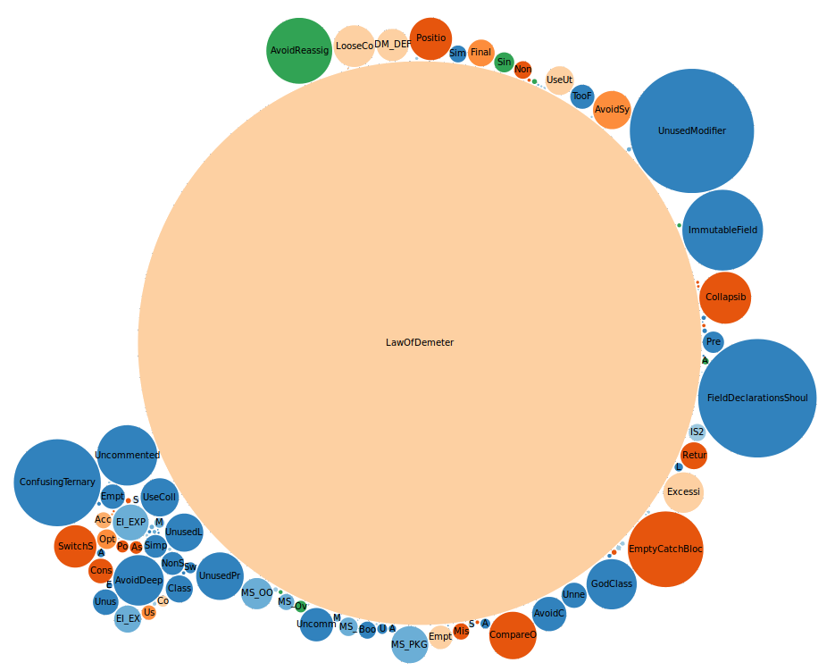

Practices (rule violations) for [sirius]
This rules have been extracted from PMD 5.1.2 and FindBugs 3.0.0.
This rules have been extracted from PMD 5.1.2 and FindBugs 3.0.0.
Rule violations are retrieved from well-known rule-checking tools like PMD and FindBugs. Rules can be assimilated to good and bad practices. They are all attached to a category (quality attribute, check the quality model for more information) and have a priority.
